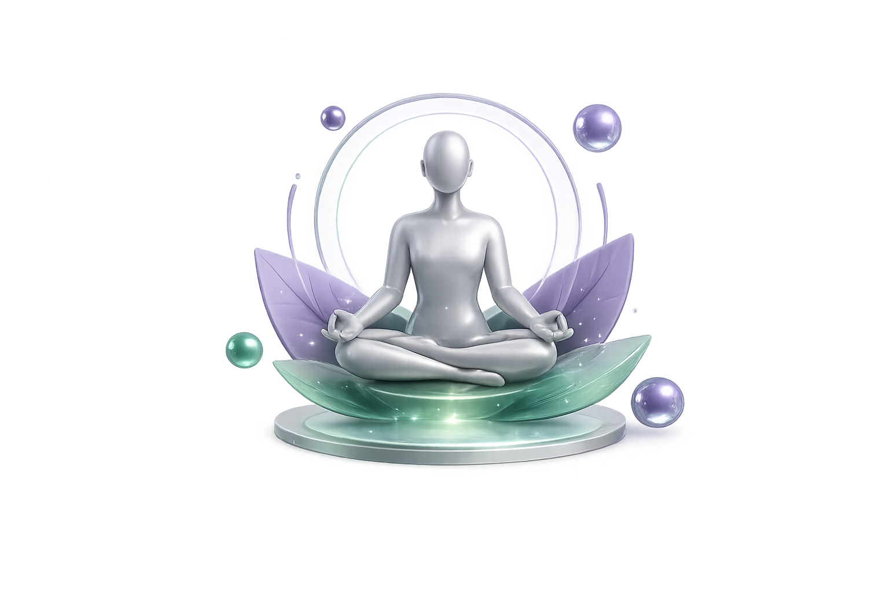
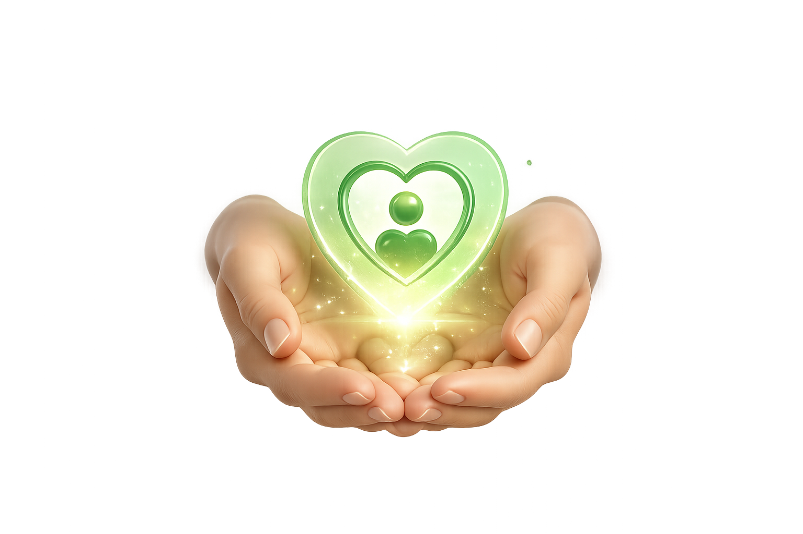

Wellness Integral
Tu salud va más allá de lo que comes. Estrés, sueño y emociones son pilares fundamentales en tu transformación.
Cuidado Personalizado
Cada consulta es un espacio seguro donde tu historia importa. Escucho, evalúo y construyo un plan único para ti.

Artículos Educativos
¿Listo para Transformar tu Salud?
Areli te acompañará en cada paso del camino. Consultas personalizadas, seguimiento continuo y educación basada en evidencia científica.